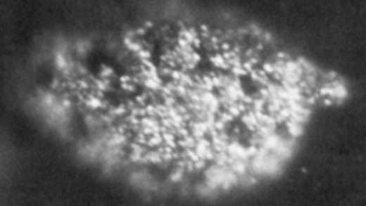

Берклий
Бе́рклий (Bk, лат. Berkelium) — искусственно полученный радиоактивный трансурановый химический элемент группы актиноидов с атомным номером 97. Берклий не имеет стабильных изотопов, наиболее долгоживущий нуклид 247Bk имеет период полураспада 1380 лет.
Синтезирован американскими физиками С. Томпсоном, А. Гиорсо и Г. Сиборгом в 1949 г. бомбардировкой оксида америция 241Am2O3 ускоренными ионами гелия.

Берклий – серебристо-белый металл, существует в двух кристаллических модификациях с гранецентрированной кубической и двойной гексагональной плотноупакованной решёткой; tпл около 1050 °C, tкип около 2630 °C, плотность 14800 кг/м3. Конфигурация внешних электронных оболочек атома 5f86s26p66d17s2; в соединениях берклий проявляет степени окисления +3 и +4. Изотоп 249Bk получают при длительном облучении Pu, Am и Cm нейтронами в ядерных реакторах; 249Bk применяют для получения 249Cf. Берклий и его соединения высокотоксичны.